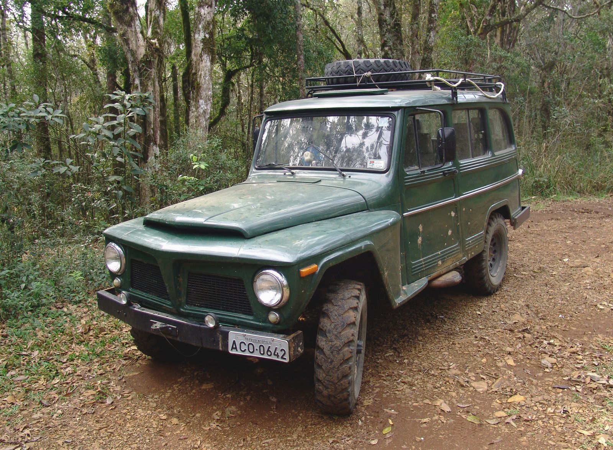
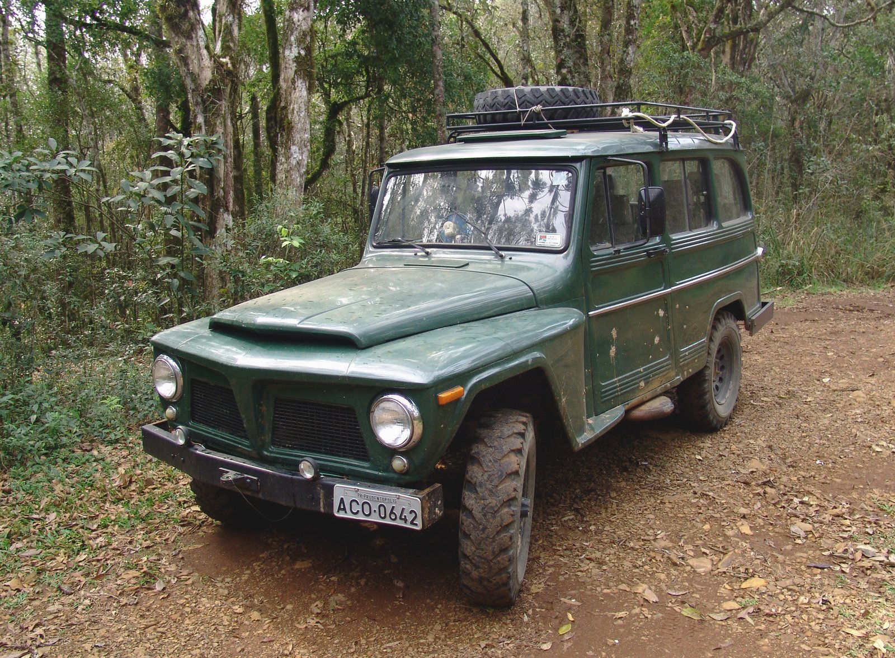
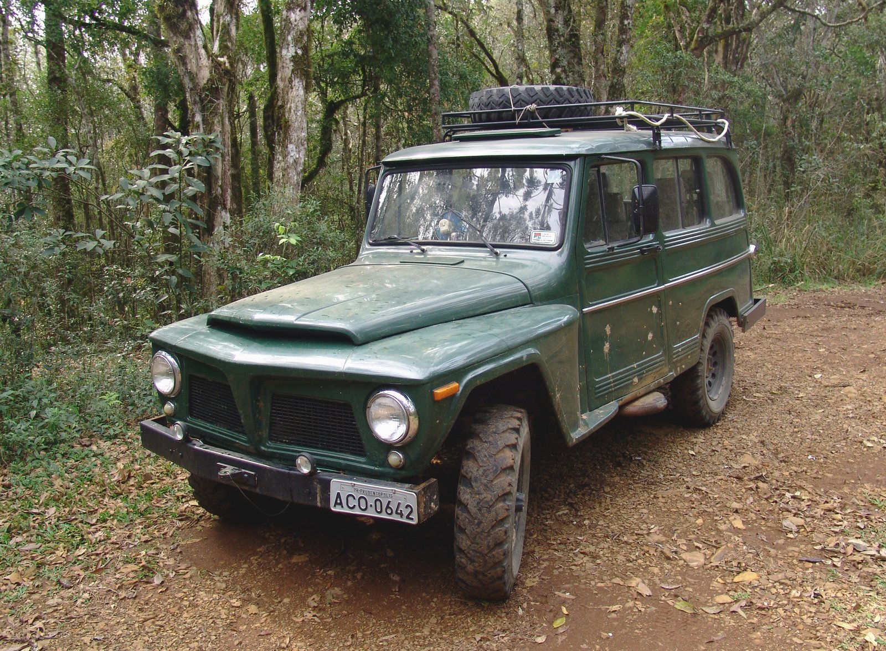
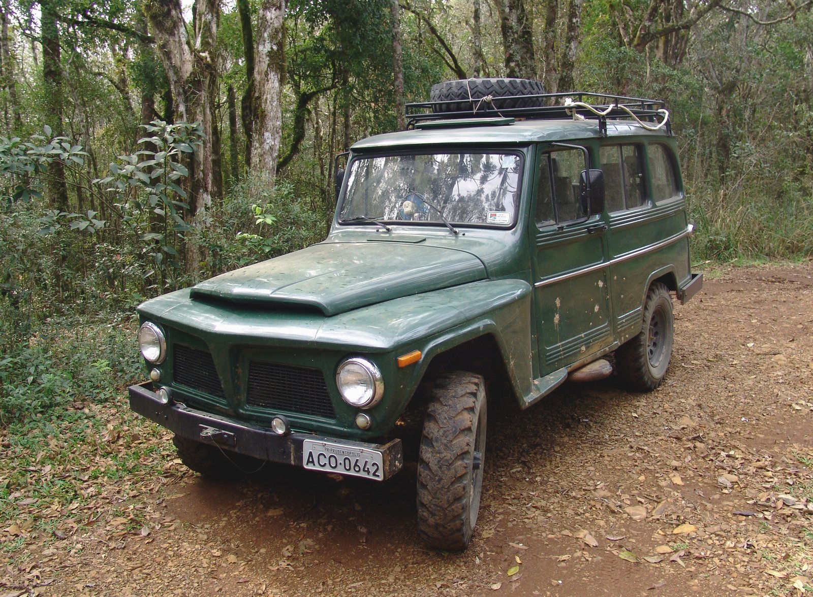

USED VEHICLE MILEAGE 67 070km
PRICE R135 050
LAST ITEM IN STOCK!
Production of the model now known as the Defender began in 1983 as the Land Rover 110, a name which reflected the 110-inch (2,800 mm) length of the wheelbase. The Land Rover 90, with 93-inch (2,362 mm) wheelbase, and Land Rover 127, with 127-inch (3,226 mm) wheelbase, soon followed.
Superficially there is little to distinguish the post-1983 vehicles from the Series III Land Rover. A full-length bonnet, revised grille, plus the fitting of wheel arch extensions to cover wider-track axles are the most noticeable changes. Initially the conservative engineering department insisted that the Land Rover was also available with a part-time 4WD system familiar to derivatives produced since 1949. However the part-time system failed to sell and was quickly dropped from the options list by 1984. While the engine and other body panels carried over from the Series III, mechanically the 90 and 110 were modernised, including:
The 110 was launched in 1983, and the 90 followed in 1984. From 1984, wind-up windows were fitted (Series models and very early 110s had sliding panels), and a 2.5-litre (153 cu in), 68 horsepower (51 kW) diesel engine was introduced. This was based on the earlier 2.3-litre (140 cu in) engine, but had a more modern fuel-injection system as well as increased capacity. A low compression version of the 3.5-litre (214 cu in) V8 Range Rover engine improved performance. It was initially available in the 110 with a Range Rover LT95 four-speed transmission with integral transfer case and vacuum operated differential lock, then later in conjunction with a high strength "Santana" five-speed transmission.
This period saw Land Rover market the utility Land Rover as a private recreational vehicle. While the basic pick-up, 4x4 and van versions were still working vehicles, the County 4x4s were sold as multi-purpose family vehicles, featuring improved interior trim and more comfortable seats. This change was reflected in Land Rover starting what had long been common practice in the car industry — detail changes and improvements to the County model from year to year in order to attract new buyers and to encourage existing owners to trade in for a new vehicle. These changes included different exterior styling graphics and colour options, and the introduction of new options, such as radio-cassette players, Rostyle wheels, headlamp wash and wipe systems, as well as accessories such as surfboard carriers and bike racks. The switch from leaf spring to coil spring suspension was a key part of the new model's success. It offered improved off-road ability, load capacity, handling and ride comfort.
| Body style | Engine | Transmission | Wheelbase | Width |
| 2 Door Hardtop | 3.9 Litre Rover V8 Petrol | 5 Speed LT77 Manual | 127 inches (3,266 mm) (130) | 70 inches (1,778) |